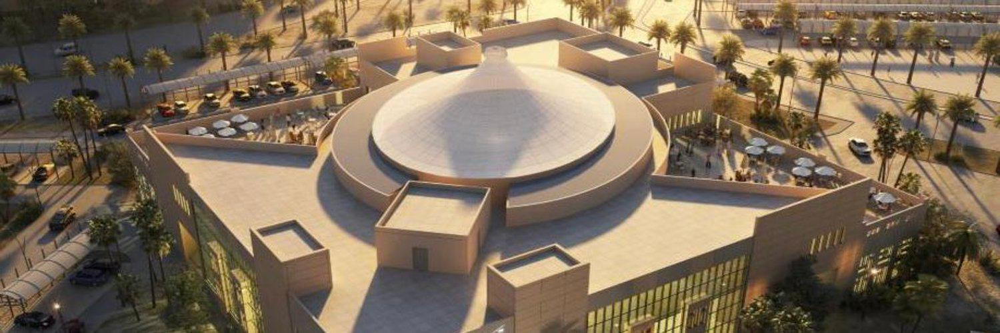
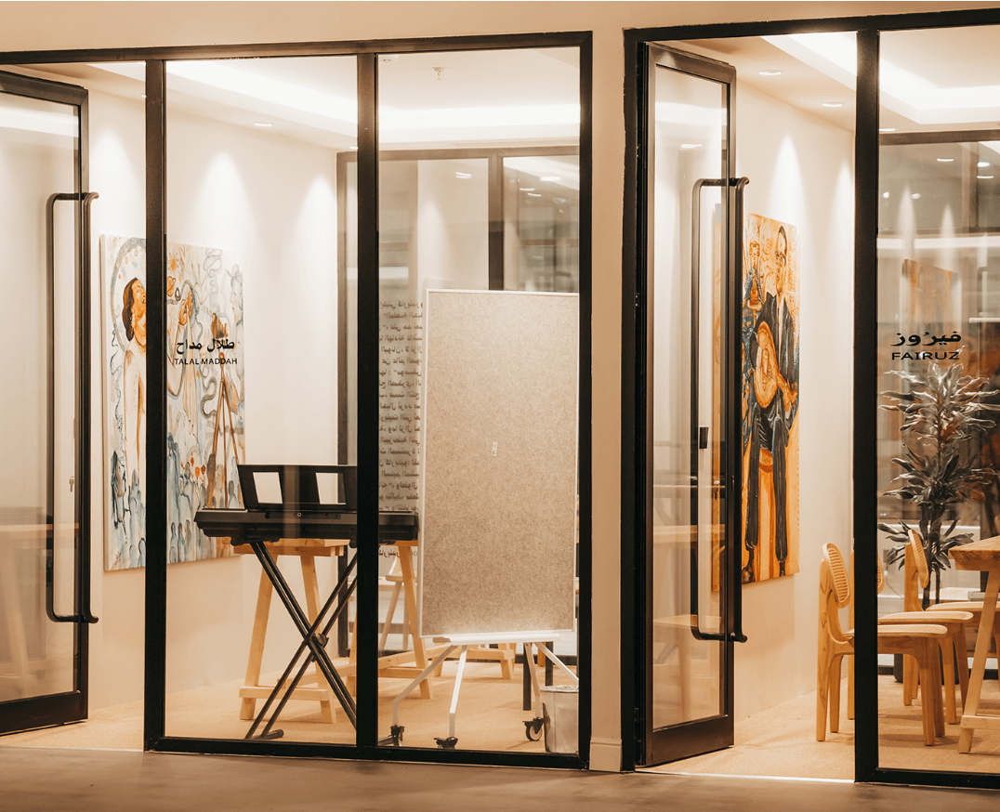
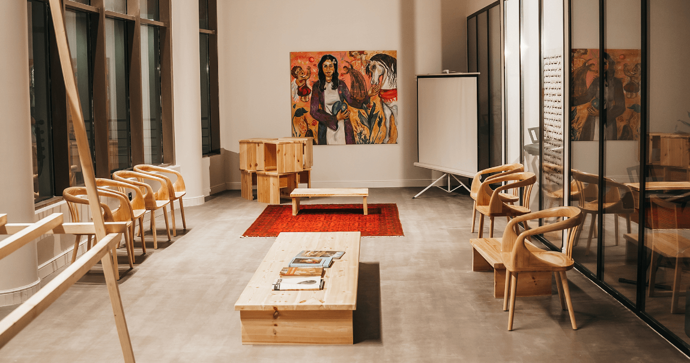
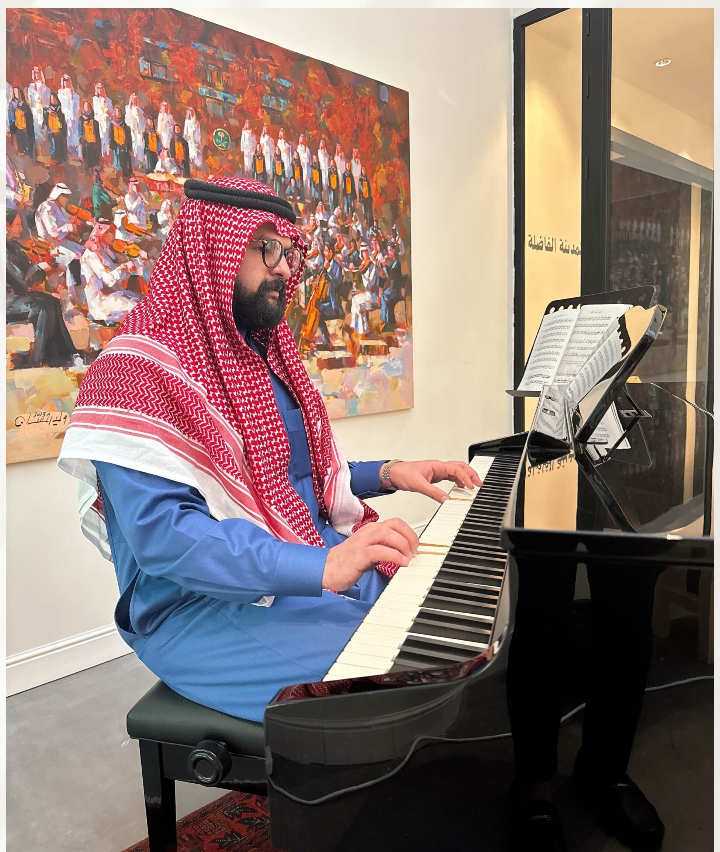

قيمنا
- الإبداع: نشجع وندعم التعبير الفني والإبداع في كل صوره.
- التعلم المستمر: نؤمن بأهمية التعلم المستمر وتطوير المهارات.
- ازدهار المجتمع: نسعى لبناء مجتمع فني محترف داخل المملكة.
نؤمن بأن الفن هو لغة عالمية تتجاوز الحدود وتلامس القلوب، لذلك نسعى لتوفير بيئة إبداعية داعمة لكل من يرغب في تطوير مهاراته الفنية والتعبير عن ذاته من خلال الفن و أن نكون الوجهة الأولى لكل من يبحث عن تحفيز لإبداعه وتطوير مهاراته الفنية لأجل بناء مجتمع فني مبتكر يجمع بين شتى المواهب ويسهم في تنمية الفن والثقافة في مجتمعنا ويساهم في ازدهار المملكة العربية السعودية لمجتمع فني متنامي يجمع بين الشغف والموهبة.


تكمن مهمتنا في تقديم دورات وفعاليات فنية عالية الجودة تستهدف مختلف مستويات الفنانين، من المبتدئين إلى المحترفين، ونسعى لتوفير التوجيه والدعم اللازم لكل فرد ليحقق إمكانياته الكاملة في عالم الفن. يسعى “ســـرد” لتوفير بيئة محفزة وداعمة لكل من يرغب في استكشاف وتعزيز مهاراته الفنية، والحث على تقديم أرقى الحفلات الكلاسيكية التي تشمل مختلف ميادين الفن، بهدف تلبية تطلعات كل فرد وتحفيزه على الابتكار والتعبير.


أ. عبدالله صالح الحضيف/ مؤسس مركز سرد الثقافي، رائد مشاريع ثقافية. أطلق أولى مشاريعه في 2016 بعنوان “أرباب الحرف الثقافي”. بدأت الفكرة حيث لم يجد الشباب أصحاب الهوايات ملتقى يجمع اهتماماتهم المشتركة، فكانت البداية بمحل صغير في شارع اليمامة بمدينة “جدة”. وفي عام 2018، افتتح الفرع الثاني في حي البساتين بجدة، ثم في عام 2019 قام بتأسيس 10 بيوت تاريخية في “جدة القديمة” وتحويلها إلى مراكز ثقافية، حيث يتميز كل بيت بهويته الفريدة ولمسته الساحرة. من بينها: “بيت زرياب”، و”متحف الحضيف”، و”البيت البوهيمي”، و”بيت الحجاز”، و”بيت الحضيف”، حيث يجتمع نشاط هذه البيوت حول الثقافة والفن. وفي عام 2020، توسعت مبادراته لتشمل مشروع “لاثريبو” في “المدينة المنورة” بوسط المدينة. في عام 2021، أنشأ مركزًا ثقافيًا في شمال جدة، وفي عام 2022، أطلق منصة “يمام الثقافية” في الرياض بالتعاون مع مكتبة الملك عبدالعزيز العامة. ليكون واحدًا من رواد الفن والموسيقى المؤثرين في المملكة العربية السعودية.